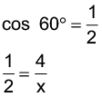

Introdução à unidade
Nesta unidade, são estudadas as relações trigonométricas no triângulo retângulo e em um triângulo qualquer. São apresentados os conceitos de tangente, seno e cosseno de um ângulo, bem como a lei dos senos e a dos cossenos.
A seguir, relacionamos os objetivos que se pretende atingir ao estudar os conceitos desta unidade.
Capítulo 1 – Relações trigonométricas no triângulo retângulo
Objetivos:
Capítulo 2 – Relações trigonométricas em um triângulo qualquer
Objetivos:
Probabilidade e Estatística – Realizando uma pesquisa amostral
Objetivo:
Orientações específicas
Na abertura da unidade, são apresentadas duas situações em que podemos relacionar a medida do ângulo de um triângulo retângulo com as medidas dos seus lados. Para resolver situações que envolvem medidas dos lados e ângulos de um triângulo, utilizamos a trigonometria para nos auxiliar na resolução.
Neste capítulo abordaremos a respeito da acessibilidade, cujo direito é previsto no decreto - Lei n.º 10.098, de 2 de dezembro de 2000 e conhecido como Lei da Acessibilidade. Esse decreto já teve algumas atualizações e que pode ser consultado on-line no site do Planalto.
Essa lei regulamenta um atendimento específico no que se refere a projetos arquitetônicos, urbanísticos, de comunicação, de informação e de transporte coletivo. Além disso, regulamenta a execução de qualquer tipo de obra que tenha destinação pública ou coletiva.
A Lei da Acessibilidade garante, por exemplo, que nos projetos arquitetônicos haja rampas para que os cadeirantes tenham acesso aos edifícios como a presente na abertura da unidade.
|
Principais habilidades da BNCC |
EF09MA03, EF09MA04, EF09MA13, EF09MA14 |
|
Competências |
CE2, CE3, CE8, CG9 |
Os ângulos de 30°, 45° e 60° - denominados ângulos notáveis - são bastante utilizados no estudo da trigonometria. Por isso, é importante que os alunos entendam como determinar a medida desses ângulos.

Apresente aos alunos o quadro dos ângulos mais utilizados em trigonometria (30°, 45° e 60°). Para sua confecção pode ser utilizada a seguinte letra de música:
Um, dois, três,
Três, dois, um,
Tudo sobre dois!
Depois vem a raiz,
Sobre o três e o dois!
A tangente é diferente,
Vejam só vocês!
Raiz de três sobre três,
Um raiz de três!
Essa letra, de autor anônimo, deve ser cantada no ritmo e melodia da canção de natal.
Na internet é possível encontrar essa e outras músicas relacionadas.
Comente com os alunos que iremos construir, ainda nesse capítulo, um teodolito para que possamos fazer algumas medições. Esse instrumento é muito utilizado para medições na horizontal ou na vertical. A finalidade principal de um teodolito é a medida de ângulos horizontais e verticais. Atualmente existem diversos modelos de teodolitos, os quais podem ser classificados pela finalidade (topográficos, geodésicos e astronômicos) e pela forma (teodolito óptico-mecânico e teodolito eletrônico).
Encontre soluções
Atividade 4
Atividade 5
Atividade 6
17² = 15² + x²
x² = 289 - 225
x² = 64
x = 8
tg θ =
θ = 37°
Atividade 7
x² = 3² + 4²
x² = 9 + 16
x = 5
cos β = = 0,8
Atividade 8
sen α =
α = 30º
cos 30º = 0,866
Caso julgue oportuno, disponibilize aos alunos o link:
http://www.mpf.mp.br/pfdc/temas/legislacao/normas-abnt/norma-abnt-NBR-9050.pdf/view
Nele é apresentado a NBR 9050 - Acessibilidade a edificações, mobiliários, espaços e equipamentos urbanos.
Encontre soluções
Atividade 1

x = 8 m
O comprimento da
escada é de 8 m.
Atividade 2
d = 4 km
O restaurante fica a
4 km da rodovia B.
Atividade 3
x = 6 cm
Atividade 4
x = 1,73 ∙ 100
x = 173 m
Altura do prédio:
173 + 1,5 = 174,5 m
Atividade 5
Atividade 6
A altura mede 10 cm.
Perímetro:
40 + 20 + 14 + 14 = 88 cm
Atividade 7
x = 4 800 m
Atividade 8
Atividade 9
Atividade 10
A torre mede m e o
comprimento do cabo é 40 m.
Atividade 11

Atividade 12

Atividade 13
Propomos, nesta atividade, a construção de um teodolito experimental para que os alunos calculem determinadas medidas da escola. Divida os alunos em grupos e escolha o que deverá ser medido. Aproveite a aula para mostrar na prática como realizar cálculos envolvendo os conceitos de trigonometria.
Atividade 14
sen 18° =
0,31 =
H = 620 m
|
Principais habilidades da BNCC |
EF09MA03, EF09MA13, EF09MA14, EF09MA23 |
|
Competências |
CE3, CE5, CE8, CG9 |
No estudo das relações trigonométricas em um triângulo qualquer, mostre aos alunos que as leis dos senos e dos cossenos também são válidas para o triângulo retângulo.
Observe a lei dos cossenos sendo utilizada para calcular a medida x.
Como cos 90º = 0,
temos: x2 = 42 + 32.
Portanto, x = 5 cm.
Agora, vamos aplicar a lei dos senos para descobrir a medida y.
Como sen 90º = 1, temos:
y = 12 cm
Porém, quando temos um triângulo retângulo, normalmente não usamos as leis dos senos e dos cossenos. Optamos por usar as relações trigonométricas do triângulo retângulo.
Para exemplificar o uso dessas leis em determinada situação, pode-se optar pelo uso da calculadora. Caso a escola disponha de calculadoras científicas, seria interessante mostrar aos alunos como utilizar essa ferramenta para as relações trigonométricas. Uma alternativa é verificar no laboratório de informática, caso a escola disponha de um, a possibilidade de utilizar uma calculadora científica inserida em algum programa.
A presença da calculadora vai permitir que os alunos com menor domínio das técnicas básicas de cálculo não fiquem impossibilitados de viverem, o processo de formulação e resolução de problemas. No processo eles podem aprender técnicas alternativas que lhes permitirão superar as dúvidas.
Além disso, por permitir aos alunos poderem trabalhar mais problemas devido à rapidez com que os cálculos são efetuados, o uso da calculadora abre a possibilidade de se atentar para fases do problema geralmente negligenciadas, tais como a discussão do resultado, a análise da estratégia utilizada e a possíveis generalizações para os processos utilizados na resolução ou para os resultados obtidos.
É importante ressaltar a contribuição da calculadora na diversificação das estratégias de resolução de problemas incentivando conjeturas, experimentações, verificações e formulação de novas hipóteses. São elementos que permitem o desenvolvimento de métodos próprios de resolução baseados, por exemplo, em de tentativa-erro, que têm muito a ver com as novas abordagens numéricas já comentadas.
Embora estejamos conscientes de que a calculadora não é indispensável para a prática de resolução de problemas, estamos convictos que ela permite a abordagem de mais e melhores problemas, integrados em situações numéricas mais ricas.
Para concluir, podemos dizer que, quando usada de modo planejado, a calculadora não inibe o pensar matemático. Pelo contrário: ela tem efeito motivador na resolução de problemas, estimula processos de estimativa e cálculo mental, dá chance aos professores de proporem problemas com dados mais reais e auxilia na elaboração de conceitos e na percepção de regularidades. A utilização da calculadora humaniza e atualiza nossas aulas, fazendo com que os alunos ganhem mais confiança para trabalhar com problemas e buscar novas experiências de aprendizagem.
SMOLE, Kátia Stocco et al. Usar ou não a calculadora em sala de aula? Disponível em: https://mathema.com.br/artigos/usar-ou-nao-a-calculadora-em-sala-de-aula/. Acesso em: 04 jul. 2022.
Encontre soluções
Atividade 1
0,883x = 2,624
x = 2,97 km
Atividade 2
x² = 20² + 40² - 2 ∙ 20 ∙ 40 ∙ cos 60º
x² = 400 + 1 600 - 1 600 ∙
x² = 2 000 - 800
x² = 1 200
Atividade 3
x² = 16 + 64 - 64 ∙
x² = 80 - 32
x² = 48
Atividade 4
x² = 10² + 16² - 2 ∙ 10 ∙ 16 ∙ cos 60º
x² = 100 + 256 - 320 ∙
x² = 356 - 160
x² = 196
x = 14 cm
Atividade 5
d² = 5² + 8² - 2 ∙ 5 ∙ 8 ∙ cos 60º
d² = 25 + 64 - 80 ∙
d² = 89 - 40
d² = 49
d = 7 cm
Atividade 6
Atividade 7
Em um triângulo qualquer o maior lado é oposto ao maior ângulo, portanto temos:
a2 = b2 + c2 - 2bc cos α
36 = 9 + 16 - 24 cos α
24 cos α = 25 - 36
cos α =
Probabilidade e estatística – Realizando uma pesquisa amostral
Caso julgue necessário, relembre os alunos dos detalhes de cada uma das etapas para a realização de uma pesquisa estatística amostral e censitária. Auxilie-os a calcularem medidas de tendência central e de dispersão por meio do software com o uso das funções:
A atividade proposta nesta página está de acordo com a Competência específica de Matemática 8, pois proporciona aos alunos a interação com seus colegas promovendo o aprendizado mútuo e o respeito pelo modo de pensar do outro.
Os censos da Antiguidade e da Idade Média objetivam primordialmente inventariar as atividades econômicas. As condições demográficas e movimentos populacionais, os presos e mortos nas guerras. As condições políticas e sociais dos impérios, estados e respectivas províncias, a hierarquia dos funcionários públicos, etc. É que os chefes de estado logo se dão conta da importância de saber quantas pessoas vivem sob seus domínios, assim como o total de nascimento e de óbitos a cada época. A incorporação do instrumental estatístico e sua aplicação a ramos específicos do saber têm criado novas áreas de estudo e de conhecimento humano. A análise de eventos biológicos com base em métodos estatísticos gera Demografia, a Bioestatística, a Biometria e a Atuaria. Seu emprego na resolução de problemas econômicos leva à Econometria (termo criado em 1926 por Frisch, inspirado exatamente em biometria). [...]
A Educação Fiscal faz parte de um processo de Educação Social, com a finalidade de formar cidadãos que participam da vida de sua comunidade, a partir do município, passando pelo Estado e alcançando a União. Preparar cada geração, segundo sua necessidade de participar dos destinos da vida política, social, econômica e cultural, é uma forma de criar compromissos consigo mesmo e com os demais integrantes do grupo que integra e faz parte. Neste sentido, os autores e instituições consultados para a obtenção das informações contidas neste texto, foram bastante coerentes e convergentes no sentido do que apresentaram. Não há dúvidas de que a receita das instituições públicas está fundamentada na criação e cobrança de tributos, fundamentados nas orientações constitucionais, do Código Tributário e nas Leis complementares.
MARTINS, Waldir Aparecido. A educação fiscal no ensino. Disponível em: http://www.diaadiaeducacao.pr.gov.br/portals/pde/arquivos/545-4.pdf. Acesso em: 4 jul. 2022. (Adaptado).
Caso tenha disponibilidade, utilize softwares de planilha eletrônica para representar gráficos com as informações que constam nas tabelas com os dados levantados.
Software: planilha eletrônica - LibreOffice.org (software gratuito).
Assunto: construção de gráfico de barras.
Objetivos:
Relembre
Atividade 3
cos α =
α = 60º
Atividade 4
Altura do edifício: 60 + 60 = 120 m
Atividade 5
sen α =
sen α = 0,5
α = 30º
Tempo necessário:
30 ∙ 30 = 900 s = 15 min
Atividade 6
Atividade 7
0,5x = 120
x = 240 m
Atividade 8
5² = x² + 4x² - 4x² cos 60º
25 = 5x² - 4x² ∙ 0,5
25 = 5x² - 2x²
3x² = 25
Atividade 9
Atividade 10
Atividade 11
Altura do prédio = 143 + 1 = 144 m